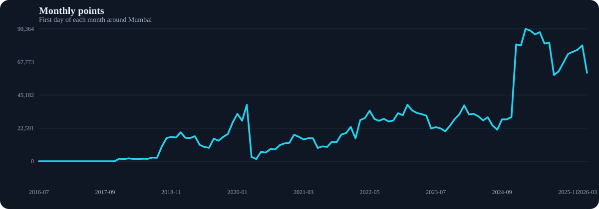
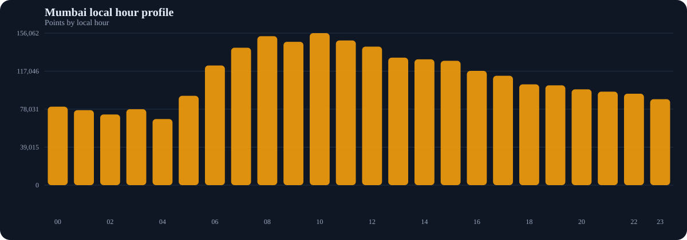
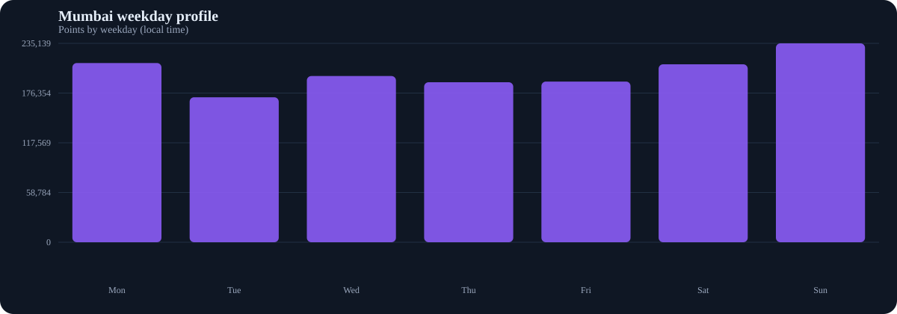
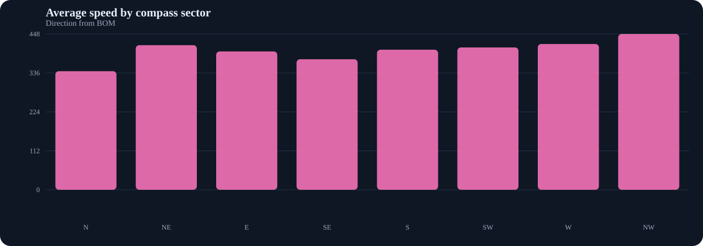
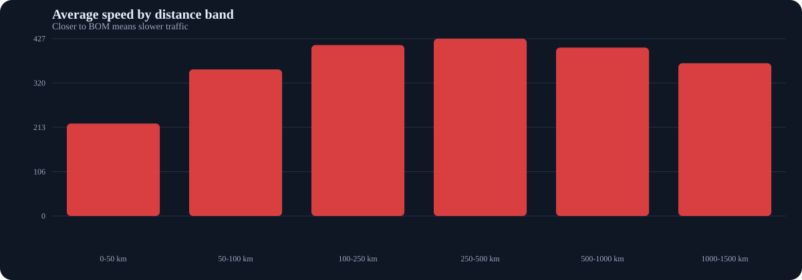
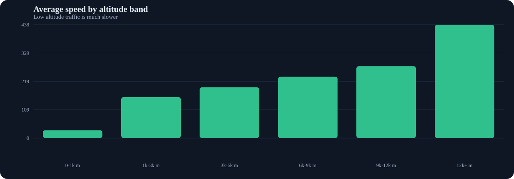

Mumbai Airspace Observatory
A compact, human-readable view of the first-day monthly sample around BOM / VABB.
2016-07 - 2026-03
What matters if you live in Mumbai
These cards translate the raw sample into something useful for a person on the ground.
Traffic over time
Monthly trend, local hour profile, and weekday pattern.




Speed behavior
Near-airport traffic slows down. High-altitude cruise stays fast. The corridor matters more than the city center.


Distance bands
Altitude bands
Recurring aircraft
These hex codes keep showing up across multiple months in the sample.